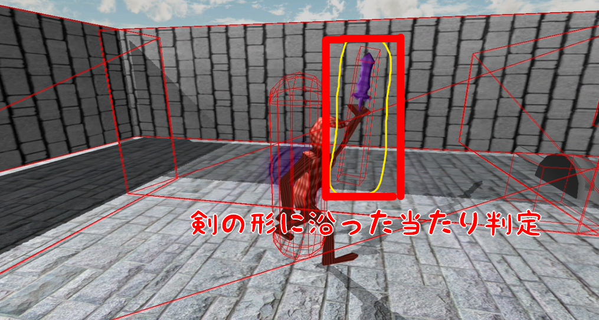
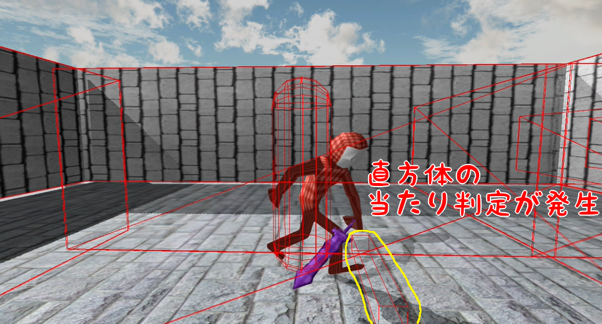
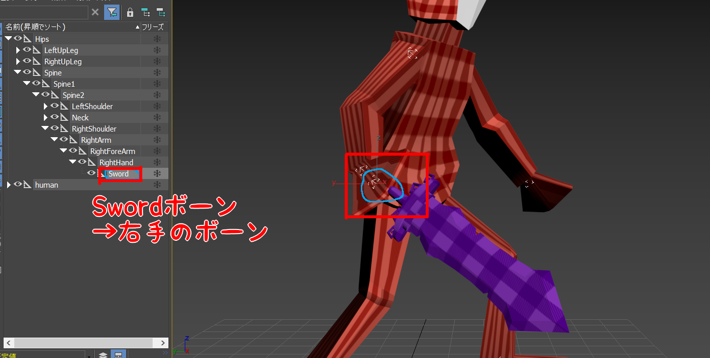

- ボーン情報の取得
- 行列
5.1 Enemy側の当たり判定
- //Enemy.cpp
- #include "stdafx.h"
- #include "Enemy.h"
- #include "Game.h"
- #include "FireBall.h"
- #include "Player.h"
- #include "sound/SoundEngine.h"
- #include "sound/SoundSource.h"
- #include <time.h>
- #include <stdlib.h>
- //CollisionObjectを使用したいため、ファイルをインクルードする。
- #include "collision/CollisionObject.h"
- Enemy::Enemy()
- {
- }
- .
- .
- .
- void Enemy::Collision()
- {
- //プレイヤーの攻撃用のコリジョンを取得する。
- const auto& collisions = g_collisionObjectManager->FindCollisionObjects("player_attack");
- //コリジョンの配列をfor文で回す。
- for(auto collision : collisions)
- {
- //コリジョンとキャラコンが衝突したら。
- if(collision->IsHit(m_charaCon))
- {
- //HPを1減らす。
- m_hp -= 1;
- //効果音を再生する。
- SoundSource* se = NewGO<SoundSource>(0);
- se->Init(4);
- se->Play(false);
- se->SetVolume(0.4f);
- return;
- }
- }
- }
5.2 Enemyのステート遷移
- //Enemy.cpp/Enemy::Collision()
- void Enemy::Collision()
- {
- //プレイヤーの攻撃用のコリジョンを取得する。
- const auto& collisions = g_collisionObjectManager->FindCollisionObjects("player_attack");
- //コリジョンの配列をfor文で回す。
- for(auto collision : collisions)
- {
- //コリジョンとキャラコンが衝突したら。
- if(collision->IsHit(m_charaCon))
- {
- //HPを1減らす。
- m_hp -= 1;
- //HPが0より上なら。
- if(m_hp > 0)
- {
- //被ダメージステートに遷移する。
- m_enemyState = enEnemyState_ReceiveDamage;
- }
- //HPが0なら。
- else if(m_hp == 0)
- {
- //ダウンステートに遷移する。
- m_enemyState = enEnemyState_Down;
- }
- //効果音を再生する。
- SoundSource* se = NewGO<SoundSource>(0);
- se->Init(4);
- se->Play(false);
- se->SetVolume(0.4f);
- return;
- }
- }
- }
- //Enemy/Enemy::Collision()
- void Enemy::Collision()
- {
- //被ダメージ、あるいはダウンステートの時には。
- //当たり判定処理をしない。
- if(m_enemyState == enEnemyState_ReceiveDamage ||
- m_enemyState == enEnemyState_Down)
- {
- return;
- }
- //プレイヤーの攻撃用のコリジョンを取得する。
- const auto& collisions = g_collisionObjectManager->FindCollisionObjects("player_attack");
- .
- .
- .
- }
5.3 ボーンを利用した当たり判定
- //Enemy/Enemy::MakeAttackCollision()
- void Player::MakeAttackCollision()
- {
- //コリジョンオブジェクトを作成する。
- auto collisionObject = NewGO<CollisionObject>(0);
- Vector3 collisionPosition = m_position;
- //座標をプレイヤーの少し前に設定する。
- collisionPosition += m_forward * 50.0f;
- //ボックス状のコリジョンを作成する。
- collisionObject->CreateBox(collisionPosition, //座標。
- Quaternion::Identity, //回転。
- Vector3(110.0f, 15.0f, 15.0f) //大きさ。
- );
- collisionObject->SetName("player_attack");
- }
- //Player.h
- class Player : public IGameObject
- {
- public:
- .
- .
- .
- int m_hp = 10;
- Game* m_game = nullptr;
- int m_swordBoneId = -1; //「Sword」ボーンのID。
- };
- //Player.cpp/Player::Start()
- bool Player::Start()
- {
- .
- .
- .
- m_game = FindGO<Game>("game");
- //「Sword」ボーンのID(番号)を取得する。
- m_swordBoneId = m_modelRender.FindBoneID(L"Sword");
- return true;
- }
- //Player.cpp/Player::MakeAttackCollision()
- void Player::MakeAttackCollision()
- {
- .
- .
- .
- collisionObject->SetName("player_attack");
- //「Sword」ボーンのワールド行列を取得する。
- Matrix matrix = m_modelRender.GetBone(m_swordBoneId)->GetWorldMatrix();
- //「Sword」ボーンのワールド行列をコリジョンに適用する。
- collisionObject->SetWorldMatrix(matrix);
- }
5.4 まとめ
- ボーンを活用しよう。
5.5 Tips 行列
- //Model.cpp/Model::UpdateWorldMatrix()
- void Model::UpdateWorldMatrix(Vector3 pos, Quaternion rot, Vector3 scale)
- {
- Matrix mBias;
- if (m_modelUpAxis == enModelUpAxisZ) {
- //Z-up
- mBias.MakeRotationX(Math::PI * -0.5f);
- }
- Matrix mTrans, mRot, mScale;
- mTrans.MakeTranslation(pos);
- mRot.MakeRotationFromQuaternion(rot);
- mScale.MakeScaling(scale);
- m_world = mBias * mScale * mRot * mTrans;
- }
この章で学ぶこと
第四章では、「Player」側の当たり判定の実装をしてきました。第五章では、「Enemy」側の実装をしましょう。
では早速、「Enemy」側の処理を実装していきましょう。
下記のコードを追記してください。
下記のコードを追記してください。
できたら、実行してみてください。「Enemy」に通常攻撃がヒットするようになったと思います。
しかし、いくら攻撃しても「Enemy」は倒れないうえに、ヒット音がおかしくなっていると思います。
しかし、いくら攻撃しても「Enemy」は倒れないうえに、ヒット音がおかしくなっていると思います。
色々おかしいのは、「Enemy」のステート遷移をしていないからです。第三章で、このゲームのクラスには、それぞれステートが設定されていると説明しました。
「Enemy」には、以下のステートが設定されています。

「Enemy」には、以下のステートが設定されています。
「Enemy」が攻撃に対して、何の反応もなかったのは、ステート遷移をしていなかったからです。
では、ステート遷移の処理を追記しましょう。
できたら、実行してみましょう。「Enemy」が倒せるようになったと思います。しかし、相変わらずヒット音がおかしいです。何故でしょうか。
「Player」の通常攻撃の当たり判定の発生は、3dsmaxで設定したタイミングの間、毎フレーム実行されます。
「Enemy」側もその間は、毎フレームダメージを受けている判定になってしまっているのです。
なので、一度の攻撃でHPが数十減ったり、音が毎フレーム鳴ったりしていたのです。
MonsterHunterやDarkSoulなどのゲームでは、攻撃1回で毎フレーム攻撃がヒットするようなことはありませんよね？基本攻撃1回で、1ヒットだと思います。
このゲームでも、攻撃1回で1ヒットだけするようにしましょう。それでは、下記のコードを追加してください。
このゲームでも、攻撃1回で1ヒットだけするようにしましょう。それでは、下記のコードを追加してください。
できたら、実行してみましょう。攻撃が1ヒットになっているでしょうか。
現在、「Player」の通常攻撃の当たり判定が結構大雑把になっています。DarkSoulなどのゲームでは、攻撃の当たり判定は武器に沿って発生しています。

攻撃の当たり判定を、このように剣の形に沿って発生させるようにしてみましょう。
それでは、Player.cppに下記のコードを追加してください。
それでは、Player.cppに下記のコードを追加してください。
できたら、実行してみましょう。当たり判定がこのように、細長くなっているでしょうか。

次に、この当たり判定に剣の座標や回転を反映させましょう。
それには、「ボーン」の情報を使用します。
3dsmaxで、Assets/modelData/humanのhuman_attack.fbxを読み込んでみてください。
humanには様々なボーンが設定されていますが、「Sword」というボーンが設定されています。この「Sword」というボーンは、剣と同じように動くように設定されています。 この「Sword」ボーンを活用しましょう。
humanには様々なボーンが設定されていますが、「Sword」というボーンが設定されています。この「Sword」というボーンは、剣と同じように動くように設定されています。 この「Sword」ボーンを活用しましょう。

それでは、Player.hと.cppに下記のコードを追加してください。
上記のコードでは、「Sword」ボーンのIDをModelRenderから取得しています。このIDを利用して、「Sword」ボーンの情報を取得しましょう。
それでは、Player.cppのMakeAttackCollision関数を以下のように修正してください。
それでは、Player.cppのMakeAttackCollision関数を以下のように修正してください。
できたら、実行してみましょう。当たり判定が剣に沿っているでしょうか。
上記のコードで、行列を使用しました。k2EngineのModelRenderでは、座標・回転・大きさを行列に変換しています。
この変換された行列を、最終的にモデル描画の際に使用しています。その行列を直接設定できるのが、上記のModelRenderのSetWorldMatrix関数というわけです。
他にも様々な処理で、行列を使用しています。